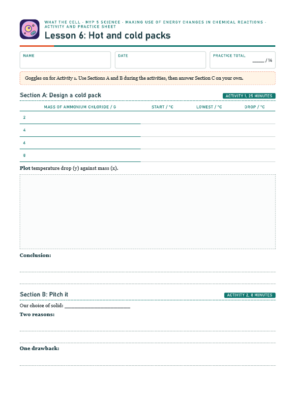

By the end of the lesson you can
- Describe how hand warmers, self-heating meals and cold packs work
- Classify each as exothermic or endothermic
- Investigate how the mass of solid affects the temperature change
- Evaluate chemicals for a product
Keys: arrows or a presentation clicker move the slides, F for full screen. Slides with a red dot have a video or simulation.
Videos (all 5 minutes or less)
- 2:24
The science behind hand warmers
The Weather Network. How disposable and reusable hand warmers make heat. Slide 7.
Simulations
- Lab
Energy Changes Lab: reaction profiles
What the Cell. Compare the profile of a cold pack with the profile of a hand warmer.
Print and practise

Activity and practice sheet
Used in the lesson’s activities, with practice questions. Your teacher has the answers.
Download (PDF)Lesson 6 slides
All 22 slides in one file, to read again or print. The video buttons on the slides open YouTube.
Download the slides (PDF)Revising? The Revision tab on the unit page has the unit notes and review.
Notes: Hot and cold packs
Disposable hand warmers
Iron powder, salt and water in a packet. Opening it lets in oxygen, and the iron rusts. Rusting is exothermic. Fine powder and salt make it fast enough to feel warm for hours. It works only once.
Reusable hand warmers
A supersaturated solution of sodium ethanoate. Clicking a metal disc starts crystals forming, and crystallising gives out energy. Boiling the pack redissolves the crystals so it can be used again.
Self-heating meals
Powdered magnesium (with a little iron and salt) reacts with water to make magnesium hydroxide and hydrogen, giving out a lot of energy. The bag is vented because hydrogen is flammable.
Instant cold packs
A solid such as ammonium nitrate or urea and a separate bag of water. Squeezing breaks the inner bag; the solid dissolves, which is endothermic, so the pack gets cold. In class we use ammonium chloride.
More solid, bigger change
More solid dissolved takes in more energy, so the temperature drop is bigger, until no more can dissolve. The increase gets smaller because more heat flows in from the room when the water is colder.
Choosing a chemical
Think about the size of the temperature change, how long it lasts, safety if the pack splits, cost and whether it can be reused. The best choice depends on what the product is for.
Key words
| hand warmer | a pack that gives out energy, usually by rusting iron |
|---|---|
| instant cold pack | a pack that takes in energy as a solid dissolves |
| supersaturated | holding more dissolved solid than it normally could |
| crystallising | a dissolved solid coming out as crystals; gives out energy |
| dissolving | a solid spreading into a liquid; often endothermic for ammonium salts |
| vent | an opening that lets a gas escape safely |